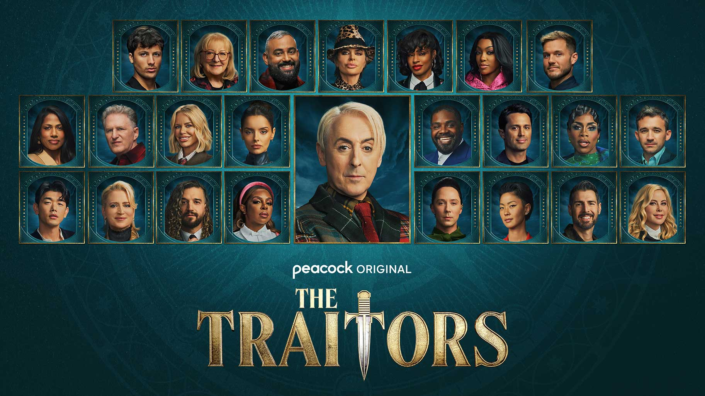

Recently, I have been enjoying the TV reality series "The Traitors US" airing on the streaming service Peacock in which former reality TV stars come together to basically play a real life game of Among Us. There are about 3-4 people chosen as the traitors, where they have to "murder" the other contestants while going undetected. The rest of the contestants are known as the faithfuls, where they try to figure out who the traitors are and banish them through daily discussion. The most recent season that is currently airing is season 4, which star well known contestants from Survivor, The Bachelor, and Love Island. The drama, suspense, and personality of contestants makes this season worth the watch. They're actually currently casting for a new season where contestants do not have to be a celebrity or known reality TV star. This would be an amazing opportunity to be on TV while simultaneously having fun in a new environment. Applications can be sent to their casting website where you can showcase your personality and why you would be great on the show.
